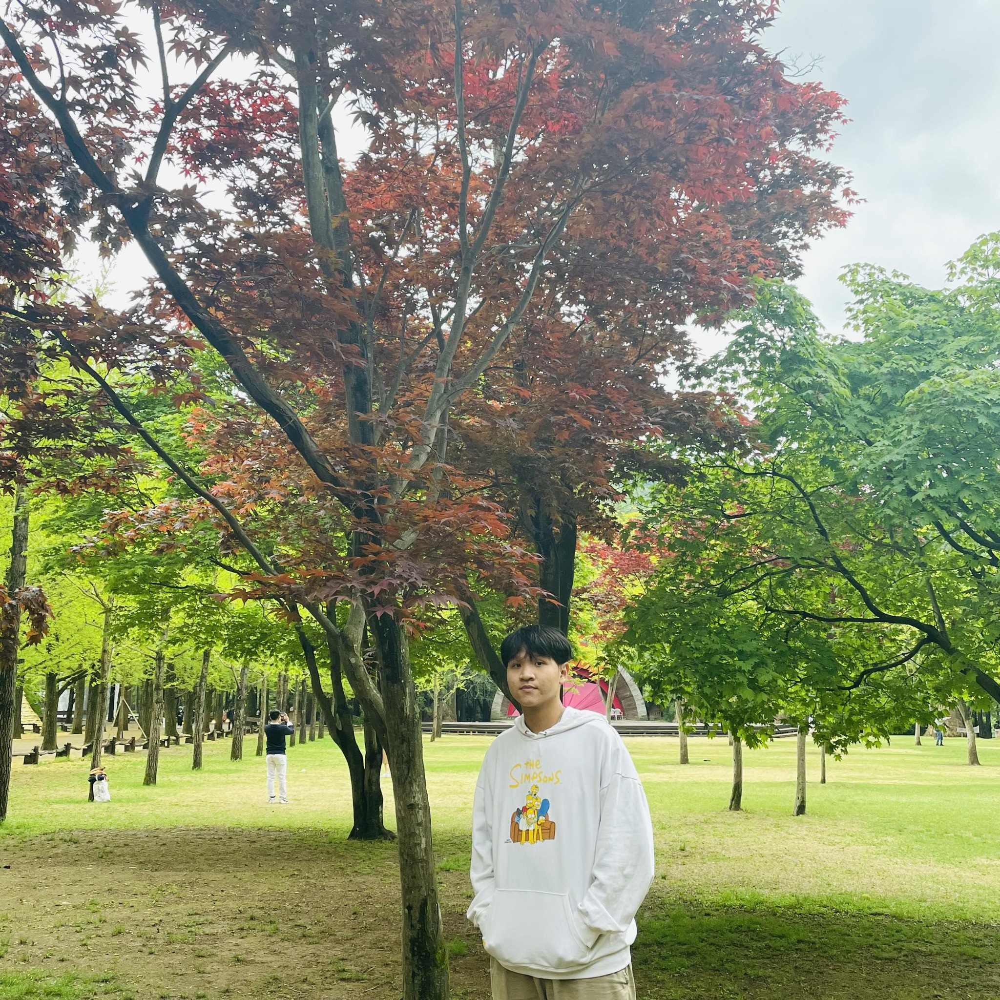

Quoc-Huy Trinh
Deep Generative Model · Computer Vision · NLP · Multimodal
Hi 👋, I'm Huy — a Vietnamese researcher and a Master's student in Computer Science at Aalto University. I'm passionate about exploring new ideas at the frontier of deep learning and computer vision, and I love building things just to see how they work. Outside of research, I enjoy reading, soccer, music, and films.
My research is supervised by Prof. Minh-Triet Tran, Prof. Ulas Bagci, Prof. Sebastian Szyller, Prof. Bo Zhao, Dr. Debesh Jha, and Msc. Hai-Dang Nguyen.
Research Interests
Education
Aalto University, Espoo, Finland
Prof. Bo Zhao
University of Science, VNU-HCM, Vietnam
Msc. Hai-Dang Nguyen
Le Hong Phong High School for the Gifted
Publications
Industry Experience
Lead Machine Learning Engineer — Spex A.I GmbH (Mar 2024 – May 2026)
Machine Learning Engineer — Spex A.I GmbH (Oct 2021 – Mar 2024)
Senior Research Scientist — SongGen (Mar 2024 – May 2025)
Data Scientist — VNG Corporation (2022 – 2024)
Founder — Aeyes – Smart Glasses for Blind (2020 – Present)
Software Developer — Microbox (2021 – 2022)
BaoData (2020)
Academic Experience
Research Intern — Xu Lab, Carnegie Mellon University (Jun 2025 – Present)
Large Vision Language Models
Research Assistant — TAC Lab, Aalto University (Present)
Trustworthiness and reliability of Large Language Models
Research Assistant — Bagci Lab, Northwestern University (Aug 2024 – Present)
Research Intern — Empathic Computing Lab (2022 – 2023)
Research Intern — AIOZ (2021 – 2022)
Academic Service
Reviewer
Mentorship & Outreach
Awards
Open Source
SongGen-AI / LLambada
Open-source music generation project.